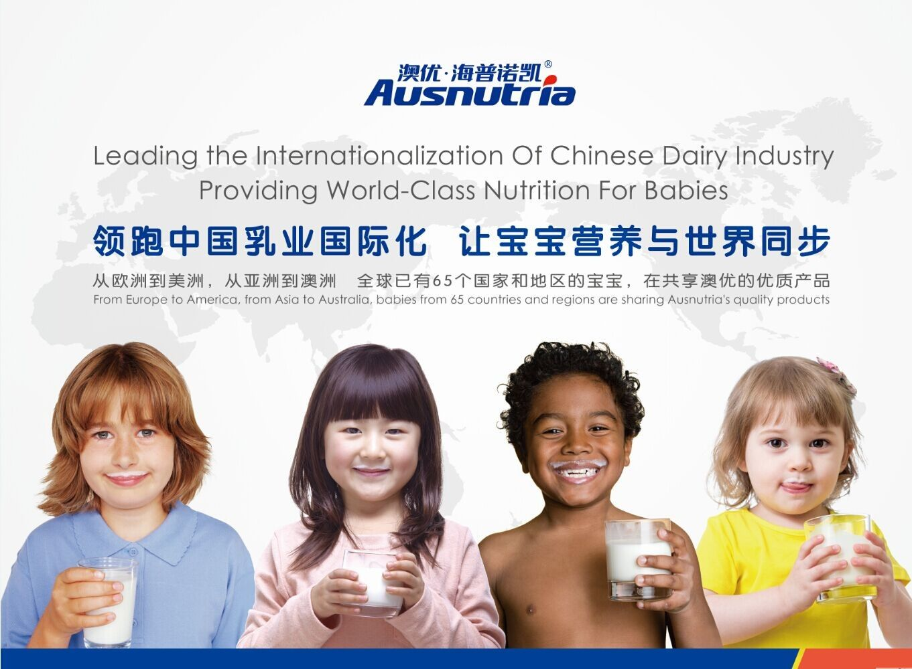
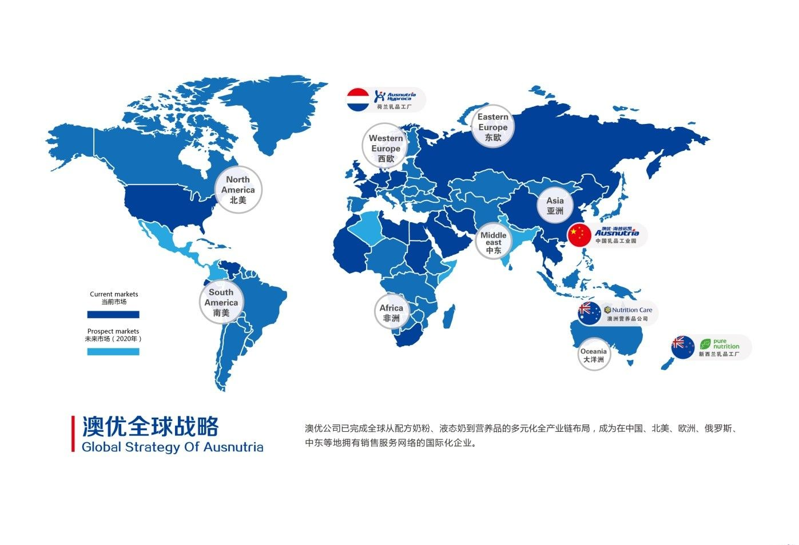
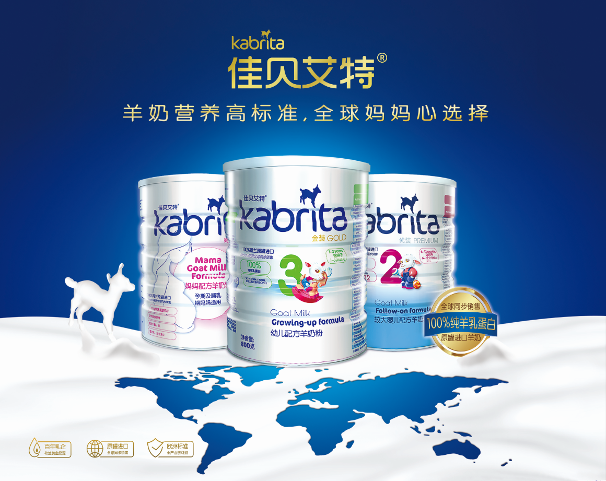

在“一带一路”战略的推进下，中国乳企正在探求适合自我发展的全球化之路。一段时间以来，众多中国知名乳企加快了在海外投资、建厂的步伐，中国乳业也实力大增，在生产规模、装备水平、质量安全、品牌力、市场环境、原料质量等方面都有了较大提升。

目前，全球乳业产业链上的优质资源正加速流动、整合，中国本土乳业的“朋友圈”逐渐朝更大范围、更深层次、更高水平扩大。《财经》新媒体记者了解到，经过多年的国际化发展，澳优乳业股份有限公司（01717.HK）已在荷兰、新西兰、澳大利亚等乳源、乳业工业质量高地投资、收购、布局。受益于国家“一带一路”战略，以澳优为代表的中国乳企逐步实现“买全球、卖全球”。在国际化的布局下，中国乳企的实力正不断增强，多元化发展的战略也提上议程。
全球化三步走 海外收购布局欧洲奶源
受益于国内乳业整体实力的提升，中国乳业在近几年开始了国际化道路的探索。据原工信部总工程师朱宏任介绍，相比于2008年，近两年，中国乳业的实力大增，在生产规模、装备水平、质量安全、品牌力、市场环境、原料质量等方面都有了非常大的提升。
作为较早走出国门进行全球化发展的中国乳企，澳优目前已在荷兰、澳大利亚、新西兰等乳源、乳业工业质量高地投资、收购、布局。澳优董事长颜卫彬在接受记者采访时表示，事实上，是澳优的基因决定了集团“走出去”的战略。
颜卫彬介绍，澳优2003年成立时就以乳业作为发展方向。然而，澳优在湖南从事乳业缺乏基础，集团不得不从开始就在国外进行布局。彼时，澳优认为，北上“抢”奶源首先面临“抢”不过北方公司的风险，其次也无法突破中国乳业同质化竞争的格局，为中国乳业做出贡献。
在此背景下，澳优开始了国际化进程，并通过自有品牌及配方由国外一流企业代工，自己拥有部分海外供应基地服务中国市场，以国际资源服务全球市场的三步走补齐奶源不足的短板，实现国际化。
2003年底的，澳优在澳大利亚用自行研发的配方，在澳大利亚的工厂进行代工生产并回国销售，这是澳优业务的起点，也是国际化的第一步。2009年，澳优在香港上市，颜卫彬认为，资本道路的国际化让集团便于实施走出去的第二步，拥有一部分的海外乳业资源。
不过，澳优很快发现，海外并购并非易事。颜卫彬坦言，由于暂不具备重建工厂的能力，2009年—2010年，集团希望在新西兰、澳大利亚进行并购，但是，两国的大型乳企很难买下，小公司澳优“看不上”。澳优当时未能在大洋洲找到合适标的。
随后，澳优把目光移至世界乳源质量和乳业工业的高地——欧洲。2011年，澳优收购了荷兰百年乳企海普诺凯集团。海普诺凯成立于1897年，是全球最早的婴幼儿奶粉制造企业之一，是荷兰唯一的有机奶粉生产商，荷兰最大的羊奶生产商，也长期是国际顶尖婴幼儿配方奶粉的代工商，相关生产工艺均处于全球领先水平。完成一系列在荷兰的收购后，澳优从产能等方面对公司进行大量技术改造，并成为荷兰有一定规模的乳业公司。

拥有海外乳业资源的同时，澳优就在考虑第三步——用国际资源服务全球市场，尤其是开发出具有自主能力的产品来打响国际市场。根据公司战略，澳优把海普诺凯的优势——羊奶粉作为发展方向，服务全球市场。2011年开始，澳优不仅在中国推出佳贝艾特羊奶粉，还陆续在北美、俄罗斯、中东等地建立销售网点。
随后，为进一步让供应链在全球中具备更强的风险防控能力，澳优在新西兰和澳大利亚进行了布局，这也能让集团利用澳洲的奶源优势，为乳业服务，更好地覆盖东南亚市场。《财经》新媒体记者注意到，荷兰、澳大利亚和新西兰等国家也正是“一带一路”沿线国家中牛奶产量大国。据中国乳制品工业协会统计的数据显示，目前，新西兰牛奶年产量达2189.8万吨，澳大利亚年产量为976.2万吨，荷兰也达到1266万吨。
买全球卖全球 产品销往65国家
在“一带一路”战略的带动下，中国消费者不仅能通过中欧班列“买全球”，中国企业也在政策红利下“卖全球”。
颜卫彬向《财经》新媒体记者透露了一组数据，目前，在线上和线下销售澳优集团旗下产品佳贝艾特的已增至65个国家和地区。记者调查发现，这65个国家和地区不仅包括美国、英国、丹麦、瑞典、法国等多个发达国家，还包括波兰、捷克共和国、匈牙利、越南、哈萨克斯坦、土耳其等众多“一带一路”沿线国家。

事实上，正是“一带一路”战略的沿线国家将是乳业的增量市场。颜卫彬透露，包括非洲、东南亚等地，人口增长最快的地方。未来的十年里，快消品增量的60%都会来自于这些国家。
澳优在荷兰、新西兰和澳大利亚等地的对奶源的布局也帮助了集团更好的“卖全球”。颜卫彬表示，现在澳优在欧洲和大洋洲的布点，将让集团旗下产品更快的覆盖目标市场。
销售面的扩大直接带来的是销量的增长和业绩的提升。根据澳优3月14日发布的2016年业绩公告显示，2016年公司销售增长30.3%至人民币27.4亿元；毛利增长90.7%至人民币11.2亿元；毛利率为41.1%，同比增加13.1%；净利润增长320.4%至人民币2.1亿元。
去年，澳优婴幼儿配方羊奶粉及牛奶粉在全球的销售额增加约50.8%至约人民币18.2亿元。其中，佳贝艾特在中国的销售额为6.64亿元人民币，同比增长约43.9%；海外销售额为1.35亿元人民币，同比增长约71.6%。
从业务规模来看，经过7年的国际化发展，澳优的年销售业绩已由2010年时的5亿元人民币迅速增长至目前的28亿元，是原有水平的5倍有余，并保持较好的发展势头。颜卫彬预计，今年，澳优的整体的业务规模将达到40多亿。从销售的角度来看，澳优一直坚持海外生产，回国销售。截至去年年底，集团的销售40%来自海外，60%来自中国。在海外销售中，20%来自美国市场，40%来自欧洲市场，其余的40%来自于俄罗斯市场和中东市场。从员工构成来看，截至目前，澳优乳业在全球的员工总数为2631人，其中国内为1997人，海外为634人，有四分之一的员工在海外工作。
产量增长，销售翻番的背后，是澳优巨大的投资和扩建工作。2011年进行全球化发展至今，澳优在海外不断进行工厂建设和技术改造，改建投资已达到20亿元人民币。颜卫彬向《财经》新媒体记者透露，澳优对荷兰和大洋洲工厂的新建、改建任务同时进行。近几年，澳优对荷兰工厂原有的三间厂房进行了改造之外，还新建了两个工厂，新工厂都将于今年年内投产，据他统计，这两个新工厂的投入就有8亿多人民币。在改造方面，澳优投资五千万进行了技术改造，外加此前并购花费的几千万欧元，澳优在欧洲的投资有将近1.8个亿欧元的整体投入。在大洋洲 ，澳优的投入也毫不手软，记者了解到，澳优在新西兰的新工厂也将于今年投产，并覆盖东南亚业务。
多元化布局 借“一带一路”告别单打独斗
7年前，澳优尝试的“走出去”时可以说是“摸着石头过河”；7年后，国家“一带一路”战略的提出让颜卫彬感到，澳优已不再是单打独斗，而是抱团作战，协同发展。
颜卫彬对记者表示，在发展中，澳优团队很明显的感受到了不同。此前，在最初走出国门时，国外的合作伙伴最初难免会有担忧，担心年轻的澳优无法帮助百年企业走向更成功，此外，管理风格的差异化也与外国公司有所差异，彼时澳优说服当地合作伙伴要花更大的功夫。而近几年，随着中国经济高速发展和公司规模的扩大，越来越多的国际公司对中国企业国际化管理水平和国际化程度有了更好的认知。上述担忧极少出现。颜卫彬认为，外国公司认同感和接受度是最大的变化。
此外，中国把“一带一路”上升国策后，走出去的企业越来越多，外国对中国的企业的整体认识不断加深。在中国政府的推动下，外国的政府部门也更多地进行推广、协同，这样一来，中国企业抱团作战的能力更强一些了，走出去的氛围也会更好一些。在整体力量的帮助下，中国企业的竞争力会更强一些。
“一带一路”战略的实施也对澳优产生了巨大影响。近两年，澳优国际化的自信心更强了。此前，不少人质疑澳优为什么不卖中国的牛奶？这种质疑会让公司处于好像没有全力为中国民族乳业做贡献的境地。但是，国家的“一带一路”战略的提出，让澳优认为国际化发展也是在很好地践行国策，从实际更好地实现可持续的发展。这是一个绿色的发展道路，在给中国环境带来更小的压力的情况下，取得国际资源发展业务，澳优也响应了国家的政策号召。由此，企业自身的信心更强一些了，能够将国家的政策支持更加到位。
借助“一带一路”的东风，澳优近期加快了集团全球化发展的步伐。随着公司奶粉业务的稳健发展，澳优也在逐步开始布局营养产业的多元化。去年8月，澳优投资收购澳洲专业高端营养品品牌Nutrition Care，正式进军国际营养品市场。除了奶粉、营养品业务，澳优乳业还成立“澳优液态营养品（长沙）有限公司”在中国推广及分销液态奶，目前已有醇奶客儿童牛奶、醇莱特风味酸乳两款液态奶在市场上销售。
目前，澳优乳业已形成以婴幼儿配方奶粉为核心，成人奶粉、液态奶、营养品等营养产品为辅的多元化布局，并逐步从婴幼儿配方奶粉乳企过渡到高价值综合营养食品公司。
巩固市场地位 拓展东南亚及南美国家
从荷兰、法国到澳大利亚、新西兰，澳优积极响应国家乳业新政和“一带一路”战略，“走出去”整合世界资源服务全球市场，从而实现企业自身的发展。颜卫彬表示，面对国家政策带来的机遇，澳优乳业将继续完善上游产业链布局，寻找更多潜在投资机遇，并通过产品多元化以满足消费者需求，进一步巩固市场地位。
伴随着“一带一路”战略的推进，澳优将在扩展销售服务型公司时采用并购的手段。《财经》新媒体记者了解到，此前，澳优在北美、俄罗斯和中东成立销售服务公司时都采用新建的手段先试水，尽量用小投入的方式减少对公司的资金和管理上造成压力，同时也能更好的控制公司风险水平。但是今年以来，随着公司里的管理水平和掌控能力的进一步提升，澳优在进入台湾市场时，用并购台湾现有婴儿配方公司取代新建。通过并购，澳优将迅速减少公司在当地市场的局限，能够借当地公司的影响，和成熟团队、网络快速结合起来。这样一来，澳优可以大幅缩短和团队磨合的时间，快速熟悉市场，尽快切入到当地市场里面。
在公司新型方式拓展和在大洋洲新工厂的帮助下，未来，在“一带一路”战略的推动下，澳优也将进一步拓展越南、马来西亚等市场。在2018年之前，印度尼西亚、马来西亚、菲律宾、越南等国家的布局将会加快。同时，澳优正在调研印度市场。与此同时，澳优还把目光投向了南美、非洲等极具潜力的市场。《财经》新媒体记者获悉，澳优将在今年年内在巴西成立销售服务型的公司，东南亚整体的商业方案也将在2017年年底前到位。
据颜卫彬介绍，目前澳优在婴幼儿配方奶粉方面的投资布局基本结束了。今年年底前，一个位于长沙的澳优新工厂将正式投产，据悉，该项目用地50亩，投资3.5亿元，建筑面积5.4万平方米，包括婴幼儿乳粉智慧厂房、智能仓库、营养食品科技中心。项目达产后年产值22.5亿元，年纳税可达2.3亿元。长沙新工厂的奶源将来自欧洲、新西兰和澳大利亚。颜卫彬希望， 利用长沙新工厂的能力，将优质产品幅射到周边的一些国家。
LANGUAGE：
EN